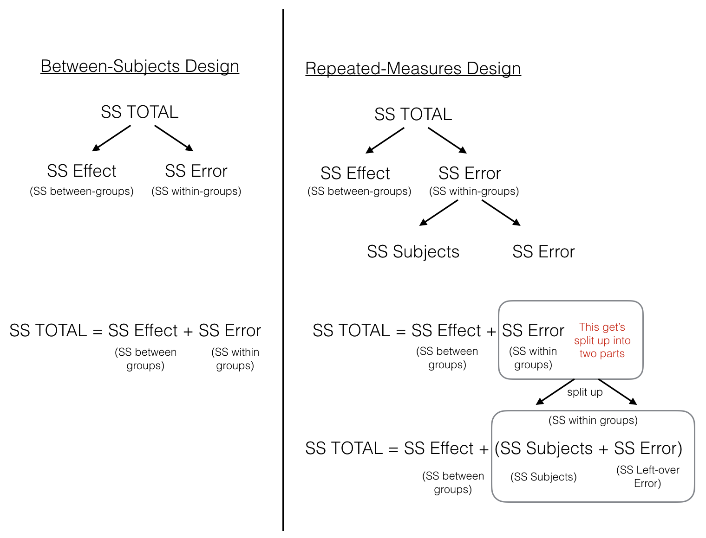
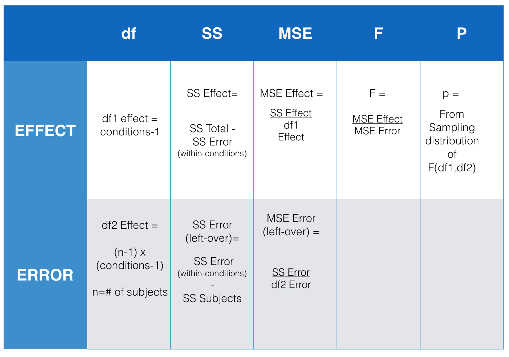
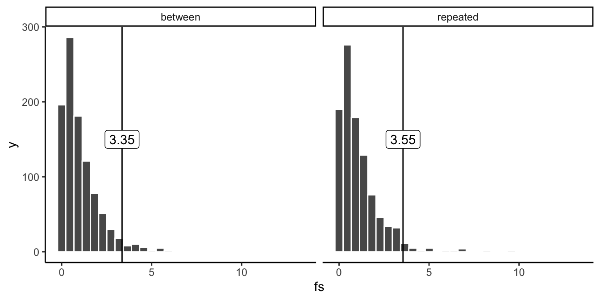
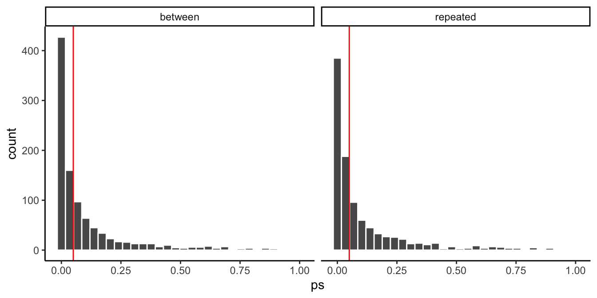
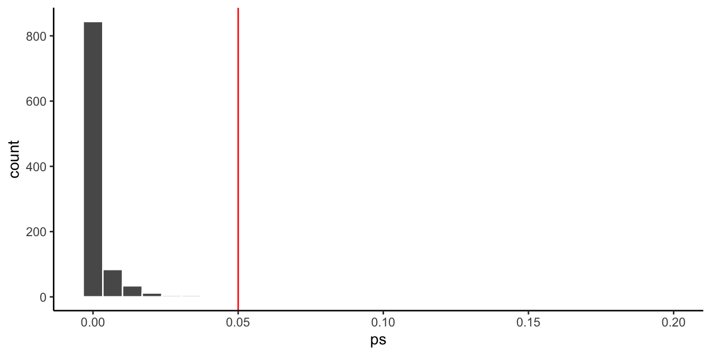
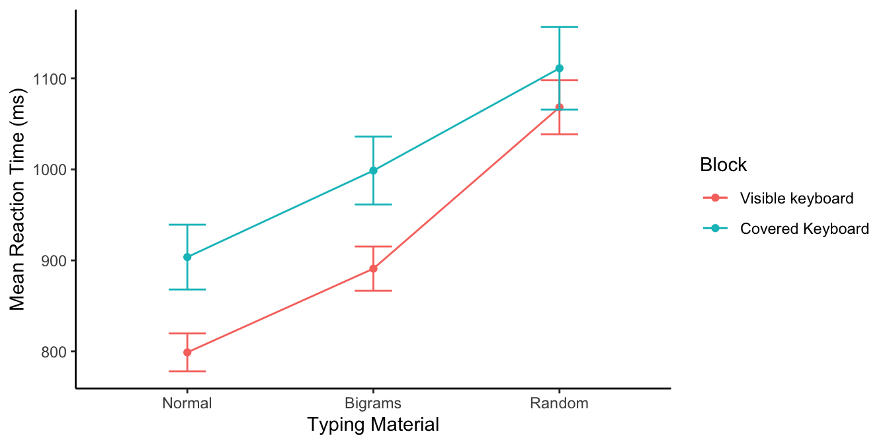

| groups | scores |
|---|---|
| A | 20 |
| A | 11 |
| A | 2 |
| B | 6 |
| B | 2 |
| B | 7 |
| C | 2 |
| C | 11 |
| C | 2 |
8 Repeated Measures ANOVA
This chapter introduces you to repeated measures ANOVA. Repeated measures ANOVAs are very common in Psychology, because psychologists often use repeated measures designs, and repeated measures ANOVAs are the appropriate test for making inferences about repeated measures designs.
Remember the paired sample \(t\)-test? We used that test to compare two means from a repeated measures design. Remember what a repeated measures design is? It’s also called a within-subjects design. These designs involve measuring the same subject more than once. Specifically, at least once for every experimental condition. In the paired \(t\)-test example, we discussed a simple experiment with only two experimental conditions. There, each subject would contribute a measurement to level one and level two of the design.
However, paired-samples \(t\)-tests are limited to comparing two means. What if you had a design that had more than two experimental conditions? For example, perhaps your experiment had 3 levels for the independent variable, and each subject contributed data to each of the three levels?
This is starting to sounds like an ANOVA problem. ANOVAs are capable of evaluating whether there is a difference between any number of means, two or greater. So, we can use an ANOVA for our repeated measures design with three levels for the independent variable.
Great! So, what makes a repeated measures ANOVA different from the ANOVA we just talked about?
8.1 Repeated measures design
Let’s use the exact same toy example from the previous chapter, but let’s convert it to a repeated measures design.
Last time, we imagined we had some data in three groups, A, B, and C, such as in Table 8.1:
The above table represents a between-subject design where each score involves a unique subject.
Let’s change things up a tiny bit, and imagine we only had 3 subjects in total in the experiment. And, that each subject contributed data to the three levels of the independent variable, A, B, and C. Before we called the IV groups, because there were different groups of subjects. Let’s change that to conditions, because now the same group of subjects participates in all three conditions. Table 8.2 shows a within-subjects (repeated measures) version of this experiment:
| subjects | conditions | scores |
|---|---|---|
| 1 | A | 20 |
| 2 | A | 11 |
| 3 | A | 2 |
| 1 | B | 6 |
| 2 | B | 2 |
| 3 | B | 7 |
| 1 | C | 2 |
| 2 | C | 11 |
| 3 | C | 2 |
8.2 Partitioning the Sums of Squares
Time to introduce a new name for an idea you learned about last chapter, it’s called partitioning the sums of squares. Sometimes an obscure new name can be helpful for your understanding of what is going on. ANOVAs are all about partitioning the sums of squares. We already did some partitioning in the last chapter. What do we mean by partitioning?
Imagine you had a big empty house with no rooms in it. What would happen if you partitioned the house? What would you be doing? One way to partition the house is to split it up into different rooms. You can do this by adding new walls and making little rooms everywhere. That’s what partitioning means, to split up.
The act of partitioning, or splitting up, is the core idea of ANOVA. To use the house analogy. Our total sums of squares (SS Total) is our big empty house. We want to split it up into little rooms. Before we partitioned SS Total using this formula:
\(SS_\text{TOTAL} = SS_\text{Effect} + SS_\text{Error}\)
Remember, the \(SS_\text{Effect}\) was the variance we could attribute to the means of the different groups, and \(SS_\text{Error}\) was the leftover variance that we couldn’t explain. \(SS_\text{Effect}\) and \(SS_\text{Error}\) are the partitions of \(SS_\text{TOTAL}\), they are the little rooms.
In the between-subjects case above, we got to split \(SS_\text{TOTAL}\) into two parts. What is most interesting about the repeated-measures design, is that we get to split \(SS_\text{TOTAL}\) into three parts, there’s one more partition. Can you guess what the new partition is? Hint: whenever we have a new way to calculate means in our design, we can always create a partition for those new means. What are the new means in the repeated measures design?
Here is the new idea for partitioning \(SS_\text{TOTAL}\) in a repeated-measures design:
\(SS_\text{TOTAL} = SS_\text{Effect} + SS_\text{Subjects} +SS_\text{Error}\)
We’ve added \(SS_\text{Subjects}\) as the new idea in the formula. What’s the idea here? Well, because each subject was measured in each condition, we have a new set of means. These are the means for each subject, collapsed across the conditions. For example, subject 1 has a mean (mean of their scores in conditions A, B, and C); subject 2 has a mean (mean of their scores in conditions A, B, and C); and subject 3 has a mean (mean of their scores in conditions A, B, and C). There are three subject means, one for each subject, collapsed across the conditions. And, we can now estimate the portion of the total variance that is explained by these subject means.
We just showed you a “formula” to split up \(SS_\text{TOTAL}\) into three parts, but we called the formula an idea. We did that because the way we wrote the formula is a little bit misleading, and we need to clear something up. Before we clear the thing up, we will confuse you just a little bit. Be prepared to be confused a little bit.
First, we need to introduce you to some more terms. It turns out that different authors use different words to describe parts of the ANOVA. This can be really confusing. For example, we described the SS formula for a between subjects design like this:
\(SS_\text{TOTAL} = SS_\text{Effect} + SS_\text{Error}\)
However, the very same formula is often written differently, using the words between and within in place of effect and error, it looks like this:
\(SS_\text{TOTAL} = SS_\text{Between} + SS_\text{Within}\)
Whoa, hold on a minute. Haven’t we switched back to talking about a between-subjects ANOVA. YES! Then why are we using the word within, what does that mean? YES! We think this is very confusing for people. Here the word within has a special meaning. It does not refer to a within-subjects design. Let’s explain. First, \(SS_\text{Between}\) (which we have been calling \(SS_\text{Effect}\)) refers to variation between the group means, that’s why it is called \(SS_\text{Between}\). Second, and most important, \(SS_\text{Within}\) (which we have been calling \(SS_\text{Error}\)), refers to the leftover variation within each group mean. Specifically, it is the variation between each group mean and each score in the group. “AAGGH, you’ve just used the word between to describe within group variation!”. Yes! We feel your pain. Remember, for each group mean, every score is probably off a little bit from the mean. So, the scores within each group have some variation. This is the within group variation, and it is why the leftover error that we can’t explain is often called \(SS_\text{Within}\).
OK. So why did we introduce this new confusing way of talking about things? Why can’t we just use \(SS_\text{Error}\) to talk about this instead of \(SS_\text{Within}\), which you might (we do) find confusing. We’re getting there, but perhaps Figure 8.1 will help out.

The figure lines up the partitioning of the Sums of Squares for both between-subjects and repeated-measures designs. In both designs, \(SS_\text{Total}\) is first split up into two pieces \(SS_\text{Effect (between-groups)}\) and \(SS_\text{Error (within-groups)}\). At this point, both ANOVAs are the same. In the repeated measures case we split the \(SS_\text{Error (within-groups)}\) into two more littler parts, which we call \(SS_\text{Subjects (error variation about the subject mean)}\) and \(SS_\text{Error (left-over variation we can't explain)}\).
So, when we earlier wrote the formula to split up SS in the repeated-measures design, we were kind of careless in defining what we actually meant by \(SS_\text{Error}\), this was a little too vague:
\(SS_\text{TOTAL} = SS_\text{Effect} + SS_\text{Subjects} +SS_\text{Error}\)
The critical feature of the repeated-measures ANOVA, is that the \(SS_\text{Error}\) that we will later use to compute the MSE in the denominator for the \(F\)-value, is smaller in a repeated-measures design, compared to a between subjects design. This is because the \(SS_\text{Error (within-groups)}\) is split into two parts, \(SS_\text{Subjects (error variation about the subject mean)}\) and \(SS_\text{Error (left-over variation we can't explain)}\).
To make this more clear, consider Figure 8.2:

As we point out, the \(SS_\text{Error (left-over)}\) in the green circle will be a smaller number than the \(SS_\text{Error (within-group)}\). That’s because we are able to subtract out the \(SS_\text{Subjects}\) part of the \(SS_\text{Error (within-group)}\). As we will see shortly, this can have the effect of producing larger F-values when using a repeated-measures design compared to a between-subjects design.
8.3 Calculating the RM ANOVA
Now that you are familiar with the concept of an ANOVA table (remember the table from last chapter where we reported all of the parts to calculate the \(F\)-value?), we can take a look at the things we need to find out to make the ANOVA table. Figure 8.3 presents an abstract for the repeated-measures ANOVA table. It shows us all the thing we need to calculate to get the \(F\)-value for our data.

So, what we need to do is calculate all the \(SS\)es that we did before for the between-subjects ANOVA. That means the next three steps are identical to the ones you did before. In fact, I will just basically copy the next three steps to find \(SS_\text{TOTAL}\), \(SS_\text{Effect}\) , and \(SS_\text{Error (within-conditions)}\). After that we will talk about splitting up \(SS_\text{Error (within-conditions)}\) into two parts, this is the new thing for this chapter. Here we go!
8.3.1 SS Total
The total sums of squares, or \(SS\text{Total}\) measures the total variation in a set of data. All we do is find the difference between each score and the grand mean, then we square the differences and add them all up.
| subjects | conditions | scores | diff | diff_squared |
|---|---|---|---|---|
| 1 | A | 20 | 13 | 169 |
| 2 | A | 11 | 4 | 16 |
| 3 | A | 2 | -5 | 25 |
| 1 | B | 6 | -1 | 1 |
| 2 | B | 2 | -5 | 25 |
| 3 | B | 7 | 0 | 0 |
| 1 | C | 2 | -5 | 25 |
| 2 | C | 11 | 4 | 16 |
| 3 | C | 2 | -5 | 25 |
| Sums | 63 | 0 | 302 | |
| Means | 7 | 0 | 33.5555555555556 |
The mean of all of the scores is called the Grand Mean. It’s calculated in the table, the Grand Mean = 7.
We also calculated all of the difference scores from the Grand Mean. The difference scores are in the column titled diff. Next, we squared the difference scores, and those are in the next column called diff_squared.
When you add up all of the individual squared deviations (difference scores) you get the sums of squares. That’s why it’s called the sums of squares (SS).
Now, we have the first part of our answer:
\(SS_\text{total} = SS_\text{Effect} + SS_\text{Error}\)
\(SS_\text{total} = 302\) and
\(302 = SS_\text{Effect} + SS_\text{Error}\)
8.3.2 SS Effect
\(SS_\text{Total}\) gave us a number representing all of the change in our data, how they all are different from the grand mean.
What we want to do next is estimate how much of the total change in the data might be due to the experimental manipulation. For example, if we ran an experiment that causes causes change in the measurement, then the means for each group will be different from other, and the scores in each group will be different from each. As a result, the manipulation forces change onto the numbers, and this will naturally mean that some part of the total variation in the numbers is caused by the manipulation.
The way to isolate the variation due to the manipulation (also called effect) is to look at the means in each group, and the calculate the difference scores between each group mean and the grand mean, and then the squared deviations to find the sum for \(SS_\text{Effect}\).
Consider this table, showing the calculations for \(SS_\text{Effect}\).
| subjects | conditions | scores | means | diff | diff_squared |
|---|---|---|---|---|---|
| 1 | A | 20 | 11 | 4 | 16 |
| 2 | A | 11 | 11 | 4 | 16 |
| 3 | A | 2 | 11 | 4 | 16 |
| 1 | B | 6 | 5 | -2 | 4 |
| 2 | B | 2 | 5 | -2 | 4 |
| 3 | B | 7 | 5 | -2 | 4 |
| 1 | C | 2 | 5 | -2 | 4 |
| 2 | C | 11 | 5 | -2 | 4 |
| 3 | C | 2 | 5 | -2 | 4 |
| Sums | 63 | 63 | 0 | 72 | |
| Means | 7 | 7 | 0 | 8 |
Notice we created a new column called means, these are the means for each condition, A, B, and C.
\(SS_\text{Effect}\) represents the amount of variation that is caused by differences between the means. The diff column is the difference between each condition mean and the grand mean, so for the first row, we have 11-7 = 4, and so on.
We found that \(SS_\text{Effect} = 72\), this is the same as the ANOVA from the previous chapter
8.3.3 SS Error (within-conditions)
Great, we made it to SS Error. We already found SS Total, and SS Effect, so now we can solve for SS Error just like this:
\(SS_\text{total} = SS_\text{Effect} + SS_\text{Error (within-conditions)}\)
switching around:
$ SS_ = SS_ - SS_ $
$ SS_ = 302 - 72 = 230 $
Or, we could compute \(SS_\text{Error (within conditions)}\) directly from the data as we did last time:
| subjects | conditions | scores | means | diff | diff_squared |
|---|---|---|---|---|---|
| 1 | A | 20 | 11 | -9 | 81 |
| 2 | A | 11 | 11 | 0 | 0 |
| 3 | A | 2 | 11 | 9 | 81 |
| 1 | B | 6 | 5 | -1 | 1 |
| 2 | B | 2 | 5 | 3 | 9 |
| 3 | B | 7 | 5 | -2 | 4 |
| 1 | C | 2 | 5 | 3 | 9 |
| 2 | C | 11 | 5 | -6 | 36 |
| 3 | C | 2 | 5 | 3 | 9 |
| Sums | 63 | 63 | 0 | 230 | |
| Means | 7 | 7 | 0 | 25.5555555555556 |
When we compute \(SS_\text{Error (within conditions)}\) directly, we find the difference between each score and the condition mean for that score. This gives us the remaining error variation around the condition mean, that the condition mean does not explain.
8.3.4 SS Subjects
Now we are ready to calculate new partition, called \(SS_\text{Subjects}\). We first find the means for each subject. For subject 1, this is the mean of their scores across Conditions A, B, and C. The mean for subject 1 is 9.33 (repeating). Notice there is going to be some rounding error here, that’s OK for now.
The means column now shows all of the subject means. We then find the difference between each subject mean and the grand mean. These deviations are shown in the diff column. Then we square the deviations, and sum them up.
| subjects | conditions | scores | means | diff | diff_squared |
|---|---|---|---|---|---|
| 1 | A | 20 | 9.33 | 2.33 | 5.4289 |
| 2 | A | 11 | 8 | 1 | 1 |
| 3 | A | 2 | 3.66 | -3.34 | 11.1556 |
| 1 | B | 6 | 9.33 | 2.33 | 5.4289 |
| 2 | B | 2 | 8 | 1 | 1 |
| 3 | B | 7 | 3.66 | -3.34 | 11.1556 |
| 1 | C | 2 | 9.33 | 2.33 | 5.4289 |
| 2 | C | 11 | 8 | 1 | 1 |
| 3 | C | 2 | 3.66 | -3.34 | 11.1556 |
| Sums | 63 | 62.97 | -0.0299999999999994 | 52.7535 | |
| Means | 7 | 6.99666666666667 | -0.00333333333333326 | 5.8615 |
We found that the sum of the squared deviations \(SS_\text{Subjects}\) = 52.75. Note again, this has some small rounding error because some of the subject means had repeating decimal places, and did not divide evenly.
We can see the effect of the rounding error if we look at the sum and mean in the diff column. We know these should be both zero, because the Grand mean is the balancing point in the data. The sum and mean are both very close to zero, but they are not zero because of rounding error.
8.3.5 SS Error (left-over)
Now we can do the last thing. Remember we wanted to split up the \(SS_\text{Error (within conditions)}\) into two parts, \(SS_\text{Subjects}\) and \(SS_\text{Error (left-over)}\). Because we have already calculate \(SS_\text{Error (within conditions)}\) and \(SS_\text{Subjects}\), we can solve for \(SS_\text{Error (left-over)}\):
\(SS_\text{Error (left-over)} = SS_\text{Error (within conditions)} - SS_\text{Subjects}\)
\(SS_\text{Error (left-over)} = SS_\text{Error (within conditions)} - SS_\text{Subjects} = 230 - 52.75 = 177.25\)
8.3.6 Check our work
Before we continue to compute the MSEs and F-value for our data, let’s quickly check our work. For example, we could have R compute the repeated measures ANOVA for us, and then we could look at the ANOVA table and see if we are on the right track so far.
| Df | Sum Sq | Mean Sq | F value | Pr(>F) | |
|---|---|---|---|---|---|
| Residuals | 2 | 52.66667 | 26.33333 | NA | NA |
| conditions | 2 | 72.00000 | 36.00000 | 0.8120301 | 0.505848 |
| Residuals | 4 | 177.33333 | 44.33333 | NA | NA |
Table 8.3 looks good. We found the \(SS_\text{Effect}\) to be 72, and the SS for the conditions (same thing) in the table is also 72. We found the \(SS_\text{Subjects}\) to be 52.75, and the SS for the first residual (same thing) in the table is also 53.66 repeating. That’s close, and our number is off because of rounding error. Finally, we found the \(SS_\text{Error (left-over)}\) to be 177.25, and the SS for the bottom residuals in the table (same thing) in the table is 177.33 repeating, again close but slightly off due to rounding error.
We have finished our job of computing the sums of squares that we need in order to do the next steps, which include computing the MSEs for the effect and the error term. Once we do that, we can find the F-value, which is the ratio of the two MSEs.
Before we do that, you may have noticed that we solved for \(SS_\text{Error (left-over)}\), rather than directly computing it from the data. In this chapter we are not going to show you the steps for doing this. We are not trying to hide anything from, instead it turns out these steps are related to another important idea in ANOVA. We discuss this idea, which is called an interaction in the next chapter, when we discuss factorial designs (designs with more than one independent variable).
8.3.7 Compute the MSEs
Calculating the MSEs (mean squared error) that we need for the \(F\)-value involves the same general steps as last time. We divide each SS by the degrees of freedom for the SS.
The degrees of freedom for \(SS_\text{Effect}\) are the same as before, the number of conditions - 1. We have three conditions, so the df is 2. Now we can compute the \(MSE_\text{Effect}\).
\(MSE_\text{Effect} = \frac{SS_\text{Effect}}{df} = \frac{72}{2} = 36\)
The degrees of freedom for \(SS_\text{Error (left-over)}\) are different than before, they are the (number of subjects - 1) multiplied by the (number of conditions -1). We have 3 subjects and three conditions, so \((3-1) * (3-1) = 2*2 =4\). You might be wondering why we are multiplying these numbers. Hold that thought for now and wait until the next chapter. Regardless, now we can compute the \(MSE_\text{Error (left-over)}\).
\(MSE_\text{Error (left-over)} = \frac{SS_\text{Error (left-over)}}{df} = \frac{177.33}{4}= 44.33\)
8.3.8 Compute F
We just found the two MSEs that we need to compute \(F\). We went through all of this to compute \(F\) for our data, so let’s do it:
\(F = \frac{MSE_\text{Effect}}{MSE_\text{Error (left-over)}} = \frac{36}{44.33}= 0.812\)
And, there we have it!
8.3.9 p-value
We already conducted the repeated-measures ANOVA using R and reported the ANOVA. Here it is again. The table shows the \(p\)-value associated with our \(F\)-value.
| Df | Sum Sq | Mean Sq | F value | Pr(>F) | |
|---|---|---|---|---|---|
| Residuals | 2 | 52.66667 | 26.33333 | NA | NA |
| conditions | 2 | 72.00000 | 36.00000 | 0.8120301 | 0.505848 |
| Residuals | 4 | 177.33333 | 44.33333 | NA | NA |
We might write up the results of our experiment and say that the main effect condition was not significant, F(2,4) = 0.812, MSE = 44.33, p = 0.505.
What does this statement mean? Remember, that the \(p\)-value represents the probability of getting the \(F\) value we observed or larger under the null (assuming that the samples come from the same distribution, the assumption of no differences). So, we know that an \(F\)-value of 0.812 or larger happens fairly often by chance (when there are no real differences), in fact it happens 50.5% of the time. As a result, we do not reject the idea that any differences in the means we have observed could have been produced by chance.
8.4 Things worth knowing
Repeated Measures ANOVAs have some special properties that are worth knowing about. The main special property is that the error term used to for the \(F\)-value (the MSE in the denominator) will always be smaller than the error term used for the \(F\)-value the ANOVA for a between-subjects design. We discussed this earlier. It is smaller, because we subtract out the error associated with the subject means.
This can have the consequence of generally making \(F\)-values in repeated measures designs larger than \(F\)-values in between-subjects designs. When the number in the bottom of the \(F\) formula is generally smaller, it will generally make the resulting ratio a larger number. That’s what happens when you make the number in the bottom smaller.
Because big \(F\) values usually let us reject the idea that differences in our means are due to chance, the repeated-measures ANOVA becomes a more sensitive test of the differences (its \(F\)-values are usually larger).
At the same time, there is a trade-off here. The repeated measures ANOVA uses different degrees of freedom for the error term, and these are typically a smaller number of degrees of freedom. So, the \(F\)-distributions for the repeated measures and between-subjects designs are actually different \(F\)-distributions, because they have different degrees of freedom.
8.4.1 Repeated vs between-subjects ANOVA
Let’s do a couple simulations to see some the differences between the ANOVA for a repeated measures design, and the ANOVA for a between-subjects design.
We will do the following.
- Simulate a design with three conditions, A, B, and C
- sample 10 scores into each condition from the same normal distribution (mean = 100, SD = 10)
- We will include a subject factor for the repeated-measures version. Here there are 10 subjects, each contributing three scores, one each condition
- For the between-subjects design there are 30 different subjects, each contributing one score in the condition they were assigned to (really the group).
We run 1000 simulated experiments for each design. We calculate the \(F\) for each experiment, for both the between and repeated measures designs. Figure 8.4 has the sampling distributions of \(F\) for both designs.

These two \(F\) sampling distributions look pretty similar. However, they are subtly different. The between \(F\) distribution has degrees of freedom 2, and 27, for the numerator and denominator. There are 3 conditions, so $df$1 = 3-1 = 2. There are 30 subjects, so $df$2 = 30-3 =27. The critical value, assuming an alpha of 0.05 is 3.35. This means \(F\) is 3.35 or larger 5% of the time under the null.
The repeated-measures \(F\) distribution has degrees of freedom 2, and 18, for the numerator and denominator. There are 3 conditions, so $df$1 = 3-1 = 2. There are 10 subjects, so $df$2 = (10-1)(3-1) = 92 = 18. The critical value, assuming an alpha of 0.05 is 3.55. This means \(F\) is 3.55 or larger 5% of the time under the null.
The critical value for the repeated measures version is slightly higher. This is because when $df$2 (the denominator) is smaller, the \(F\)-distribution spreads out to the right a little bit. When it is skewed like this, we get some bigger \(F\)s a greater proportion of the time.
So, in order to detect a real difference, you need an \(F\) of 3.35 or greater in a between-subjects design, or an \(F\) of 3.55 or greater for a repeated-measures design. The catch here is that when there is a real difference between the means, you will detect it more often with the repeated-measures design, even though you need a larger \(F\) (to pass the higher critical \(F\)-value for the repeated measures design).
8.4.2 repeated measures designs are more sensitive
To illustrate why repeated-measures designs are more sensitive, we will conduct another set of simulations.
We will do something slightly different this time. We will make sure that the scores for condition A, are always a little bit higher than the other scores. In other words, we will program in a real true difference. Specifically, the scores for condition will be sampled from a normal distribution with mean = 105, and SD = 10. This mean is 5 larger than the means for the other two conditions (still set to 100).
With a real difference in the means, we should now reject the hypothesis of no differences more often. We should find \(F\) values larger than the critical value more often. And, we should find \(p\)-values for each experiment that are smaller than .05 more often, those should occur more than 5% of the time.
To look at this we conduct 1000 experiments for each design, we conduct the ANOVA, then we save the \(p\)-value we obtained for each experiment. This is like asking how many times will we find a \(p\)-value less than 0.05, when there is a real difference (in this case an average of 5) between some of the means. Figure 8.5 contains histograms of the \(p\)-values:

Here we have two distributions of observed p-values for the simulations. The red line shows the location of 0.05. Overall, we can see that for both designs, we got a full range of \(p\)-values from 0 to 1. This means that many times we would not have rejected the hypothesis of no differences (even though we know there is a small difference). We would have rejected the null every time the \(p\)-value was less than 0.05.
For the between subject design, there were 584 experiments with a \(p\) less than 0.05, or 0.584 of experiments were “significant”, with alpha=.05.
For the within subject design, there were 569 experiments with a \(p\) less than 0.05, or 0.569 of experiments were “significant”, with alpha=.05.
OK, well, you still might not be impressed. In this case, the between-subjects design detected the true effect slightly more often than the repeated measures design. Both them were right around 55% of the time. Based on this, we could say the two designs are pretty comparable in their sensitivity, or ability to detect a true difference when there is one.
However, remember that the between-subjects design uses 30 subjects, and the repeated measures design only uses 10. We had to make a big investment to get our 30 subjects. And, we’re kind of unfairly comparing the between design (which is more sensitive because it has more subjects) with the repeated measures design that has fewer subjects.
What do you think would happen if we ran 30 subjects in the repeated measures design? Let’s find out. Figure 8.6 re-plots the above, but this time only for the repeated measures design. We increase \(N\) from 10 to 30.

Wowsers! Look at that. When we ran 30 subjects in the repeated measures design almost all of the \(p\)-values were less than .05. There were 986 experiments with a \(p\) less than 0.05, or 0.986 of experiments were “significant”, with alpha=.05. That’s huge! If we ran the repeated measures design, we would almost always detect the true difference when it is there. This is why the repeated measures design can be more sensitive than the between-subjects design.
8.5 Real Data
Let’s look at some real data from a published experiment that uses a repeated measures design. This is the same example that you will be using in the lab for repeated measures ANOVA. The data happen to be taken from a recent study conducted by Lawrence Behmer and myself, at Brooklyn College (Behmer and Crump 2017).
We were interested in how people perform sequences of actions. One question is whether people learn individual parts of actions, or the whole larger pattern of a sequence of actions. We looked at these issues in a computer keyboard typing task. One of our questions was whether we would replicate some well known findings about how people type words and letters.
From prior work we knew that people type words way faster than than random letters, but if you made the random letters a little bit more English-like, then people type those letter strings a little bit faster, but not as slow as random string.
In the study, 38 participants sat in front of a computer and typed 5 letter strings one at a time. Sometimes the 5 letter made a word (Normal condition, TRUCK), sometimes they were completely random (Random Condition, JWYFG), and sometimes they followed patterns like you find in English (Bigram Condition, QUEND), but were not actual words. So, the independent variable for the typing material had three levels. We measured every single keystroke that participants made. This gave us a few different dependent measures. Let’s take a look a the reaction times. This is how long it took for participants to start typing the first letter in the string.

OK, I made a figure showing the mean reaction times for the different typing material conditions. You will notice that there are two sets of lines. That’s because there was another manipulation I didn’t tell you about. In one block of trials participants got to look at the keyboard while they typed, but in the other condition we covered up the keyboard so people had to type without looking. Finally, the error bars are standard error of the means.
Note
Note, the use of error bars for repeated-measures designs is not very straightforward. In fact the standard error of the means that we have added here are not very meaningful for judging whether the differences between the means are likely not due to chance. They would be if this was a between-subjects design. We will update this textbook with a longer discussion of this issue, for now we will just live with these error bars.
For the purpose of this example, we will say, it sure looks like the previous finding replicated. For example, people started typing Normal words faster than Bigram strings (English-like), and they started typing random letters the most slowly of all. Just like prior research had found.
Let’s focus only on the block of trials where participants were allowed to look at the keyboard while they typed, that’s the red line, for the “visible keyboard” block. We can see the means look different. Let’s next ask, what is the likelihood that chance (random sampling error) could have produced these mean differences. To do that we run a repeated-measures ANOVA in R. Here is the ANOVA table.
| Df | Sum Sq | Mean Sq | F value | Pr(>F) | |
|---|---|---|---|---|---|
| Residuals | 37 | 2452611.9 | 66286.808 | NA | NA |
| Stimulus | 2 | 1424914.0 | 712457.010 | 235.7342 | 0 |
| Residuals1 | 74 | 223649.4 | 3022.289 | NA | NA |
Alright, we might report the results like this. There was a significant main effect of Stimulus type, F(2, 74) = 235.73, MSE = 3022.289, p < 0.001.
Notice a couple things. First, this is a huge \(F\)-value. It’s 253! Notice also that the p-value is listed as 0. That doesn’t mean there is zero chance of getting an F-value this big under the null. This is a rounding error. The true p-value is 0.00000000000000… The zeros keep going for a while. This means there is only a vanishingly small probability that these differences could have been produced by sampling error. So, we reject the idea that the differences between our means could be explained by chance. Instead, we are pretty confident, based on this evidence and and previous work showing the same thing, that our experimental manipulation caused the difference. In other words, people really do type normal words faster than random letters, and they type English-like strings somewhere in the middle in terms of speed.
8.6 Summary
In this chapter you were introduced to the repeated-measures ANOVA. This analysis is appropriate for within-subjects or repeated measures designs. The main difference between the independent factor ANOVA and the repeated measures ANOVA, is the ability to partial out variance due to the individual subject means. This can often result in the repeated-measures ANOVA being more sensitive to true effects than the between-subjects ANOVA.
Behmer, Lawrence P, and Matthew JC Crump. 2017. “Spatial Knowledge During Skilled Action Sequencing: Hierarchical Versus Nonhierarchical Representations.” Attention, Perception, & Psychophysics 79 (8): 2435–48. https://doi.org/10.3758/s13414-017-1389-3.